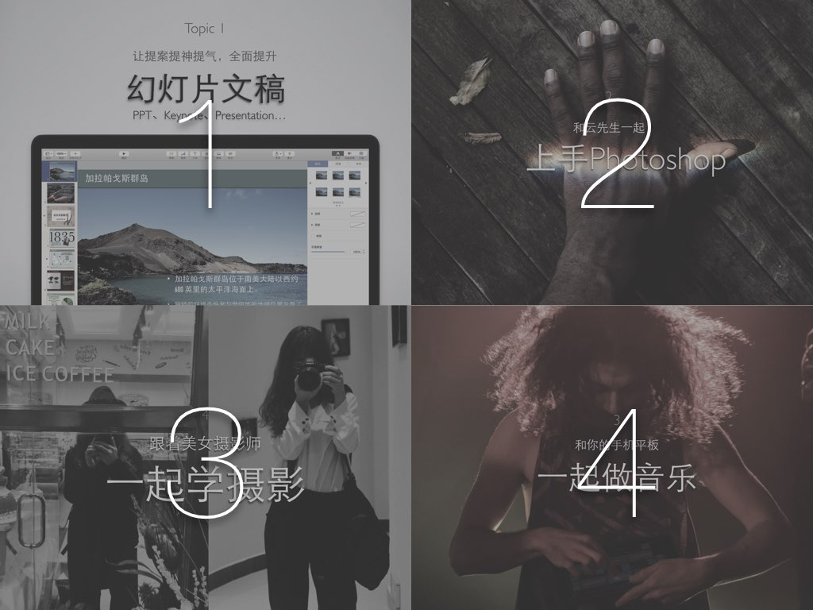
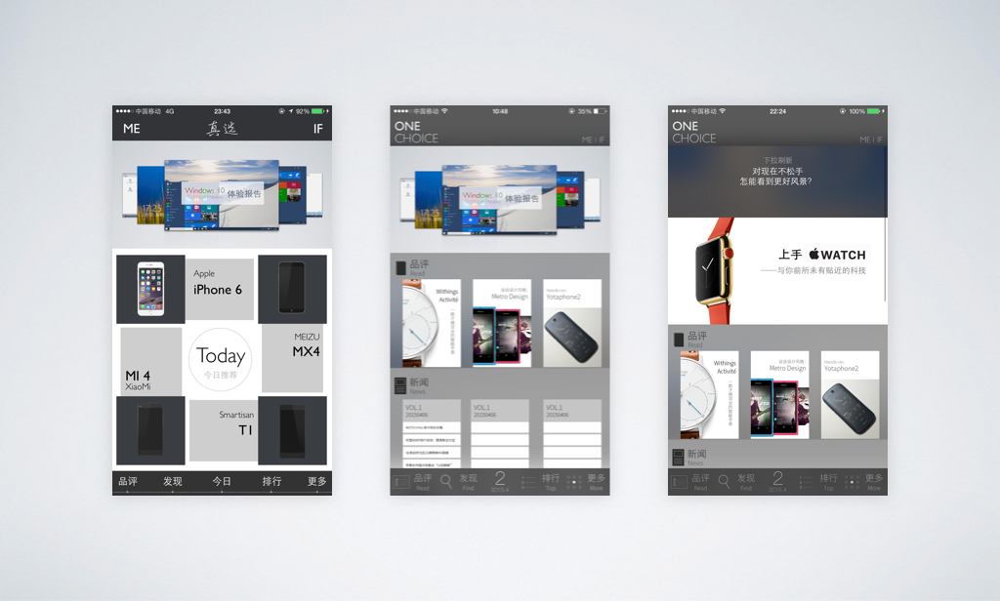
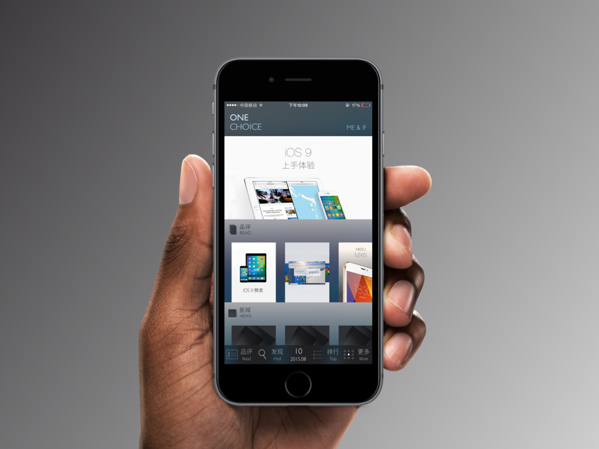
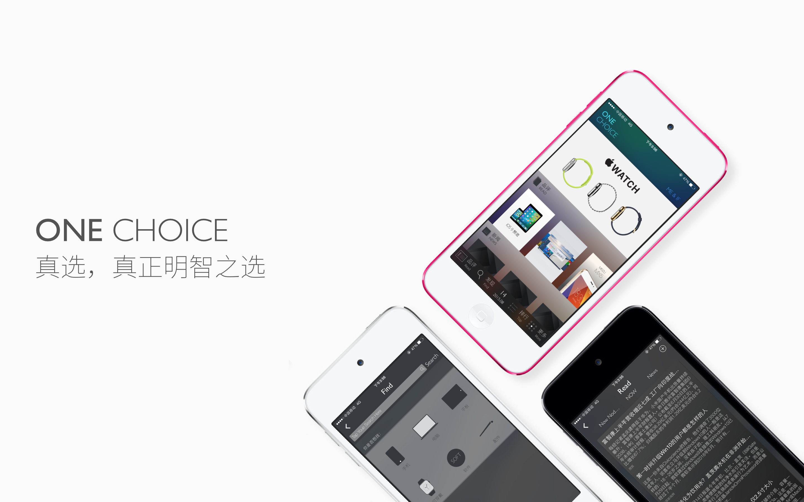
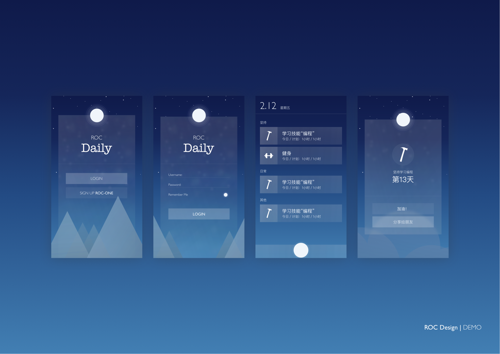
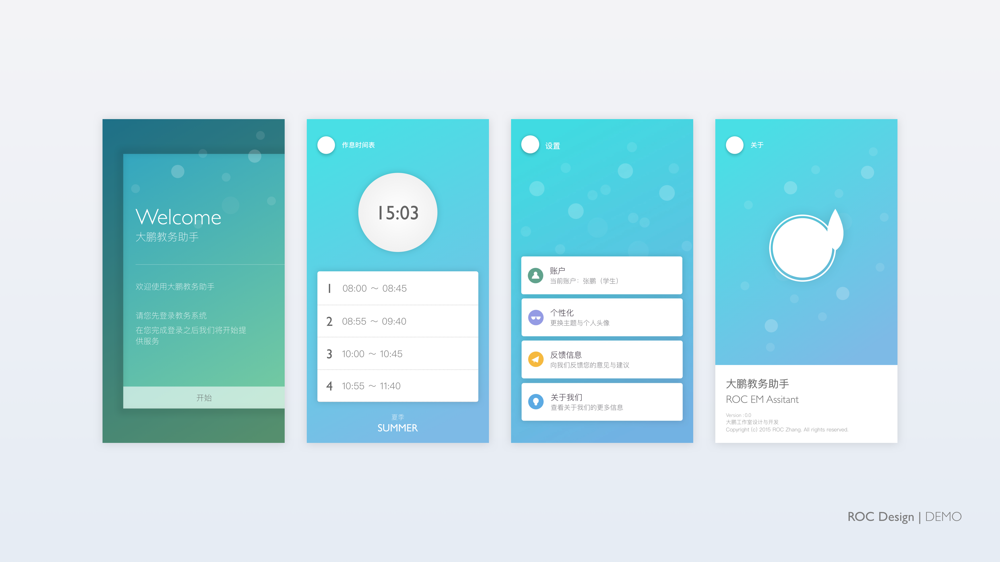
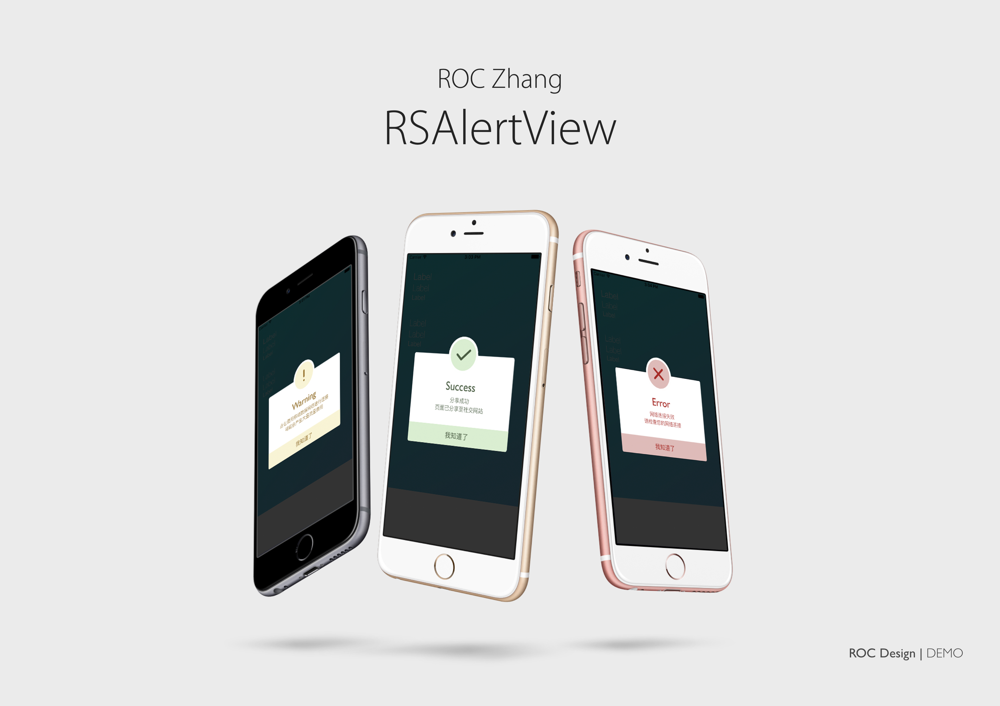
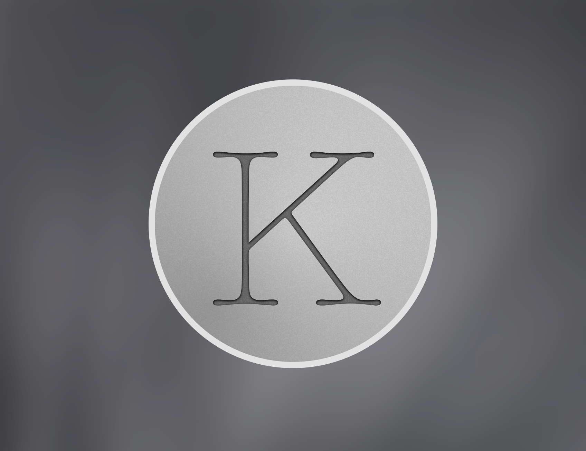
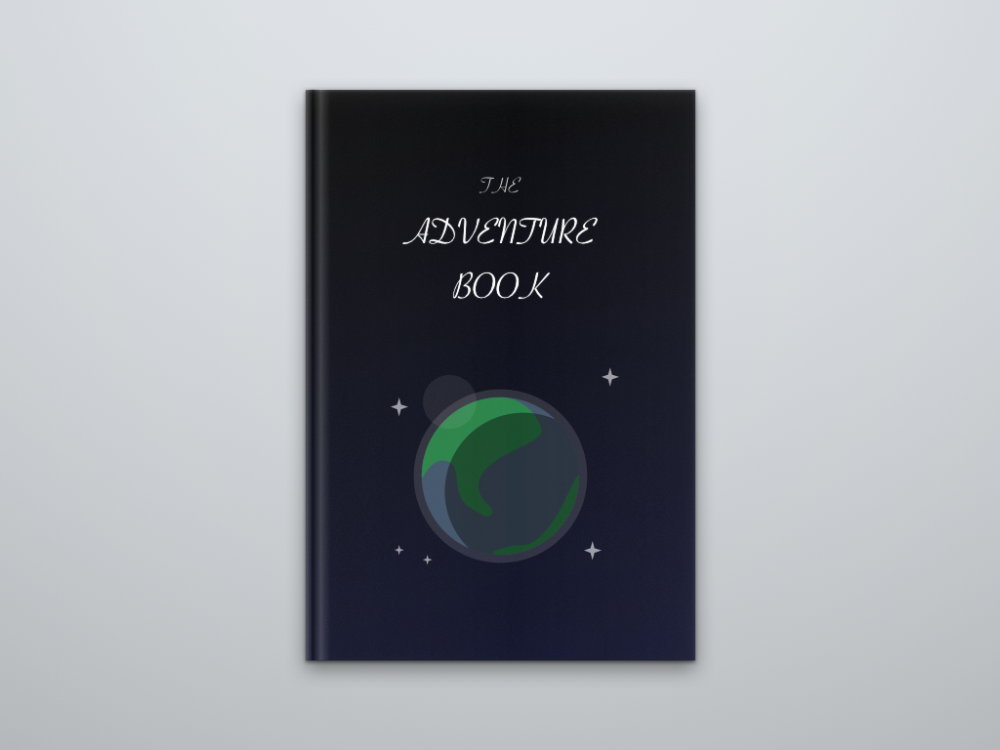

今晚逛 Dribbble 的时候突然又点开看了自己悲剧的 Debuts ，于是突然想到理理这个，正好可以也当作自己博客 Design 系列第一篇。
大学前
大学前基本应该不懂啥是设计（现在应该也不懂）。
初中的时候机缘巧合参加了网页制作的比赛，那时候第一次开始用 Photoshop，做一些素材，修改排版。当时觉得来回折腾调整，或者这种在“制作／创作”的感觉非常有意思。而初高中时期除了偶尔帮班主任做一些班会的 PPT 也就没什么时间和机会做东西了。那会儿能算的上接触的设计作品也就算是各种主题了。
大学后
大一
大一刚进大学那会儿除了日常写程序结果是做各种 PPT，居然还被班上同学嘲笑为 “PPT 小王子”。其实是根本没啥特别的，只不过我没有用 Office 艺术字而已。附上一个那会儿给一个小活动做的 Keynote。

然后就开始算的上设计了第一个作品了– 真选！那时候还不是会做真正的 App 开发，就在 Photoshop 里面画设计稿。那时候完全不了解 App 设计的准则规范之类，完全凭借着自己的感觉来。从自己觉得丑到爆炸到后来慢慢改成觉得还行之间，也是改了很多个版本。
一开始几个版本是这样的，其实都挺辣眼睛的：

最后做成这样了：

还若有其事的做了一个 MockUp 当 Cover ：

后来非常幸运的认识了 Martin Waters ， 神奇的白开水兄。大一暑假的时候还和白开水见了面，一起继续做了真选参加了一小比赛。一开始是在一个编程开发的群认识了白开水，后来发现白开水设计的东西都惊人的漂亮。我那时会将我设计的一些不堪入目的东西交给白开水，他总是会画腐朽为神奇一般的 redesign 的非常棒。而且他总是会向我介绍一些非常神奇的工具，比如我第一次了解 Sketch 就是白开水介绍给我的，嗯，真是如同打开了新世界的大门。
当年暑假白开水兄画下的一些 Icon ：
大二
寒假的时候读了 About Face 和 设计心理学全系列的四册，算是第一次开始看设计类的书籍。后来开学之后大多数时间都在学习写 App，所以就在有了新 App 想法的时候会画上一些:
Roc Daily

教务助手

期间还画过一些小东西，比如图标还有小组件之类的：


实习的时候见到了之前仰慕已久大神们，在一旁观察他们做设计时的章法、理念、创意，还有和我们把 App 用程序写出来之后和设计稿仔细的比对调整，像素级的双眼和对细节的追求。嗯，我在钦佩的同时又开始感概道阻且长啦。
之后还得到了自己心心念念的 Dribbble 邀请码（我要再次再次感谢敬爱的马老师），本打算也画一波 Hello Dribbble 的我尝试了几稿后还是决定在原来的设计稿上修改一个提交，于是这就是我的 Debuts 了:

Dribbble 上的地址是：https://dribbble.com/shots/2969219-Hello-Dribbble
现在感觉确实画的不好后悔把这个当 Debuts 啦。
尾巴
想起来刚开始练习做设计的时候还怀疑过不写代码自己是不是跑偏了，后来觉得如果是自己想要做一个产品的话，设计和开发都是实现好产品的一种方式，本质是相同的。我想过做设计的目的是什么，嗯，应该是悦心，从设计产品的 look 到 work，好的设计总能让人感到愉悦。这太值得了。